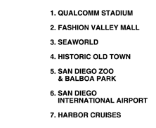
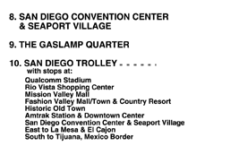
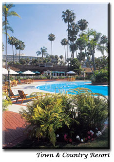
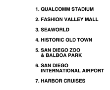
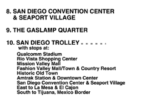

 
|  |
Cluster 2004 will be held at the
Town and Country Resort, located in Mission Valley,
just 10 minutes from the airport, right next to the San Diego Trolley, the
Fashion Valley Mall, and the Riverwalk Golf course. Reservations should
be made with the hotel directly. The conference rate of $129.00 (which you
can obtain by mentioning the "IEEE Cluster 2004" conference) will be garanteed
until August 28, 5PM PST. After this date rooms reserved for Cluster'04 will
be given to anyone on a first-come first-serve basis.
Town and Country Resort |
 